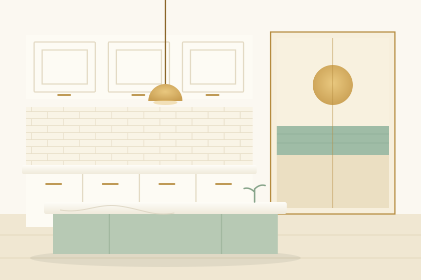

The coastal white kitchen
Palm BeachA dark 1980s galley opened to the deck and flooded with morning light, in crisp shaker whites over a soft sage island. The stone was chosen to read like wet sand — calm from a distance, full of movement up close.
Package Full Reno Benchtop Corella Stone ‘Shorebreak’ On site 13 days